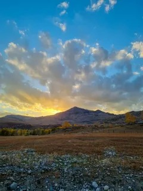
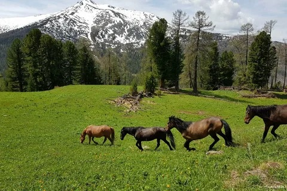
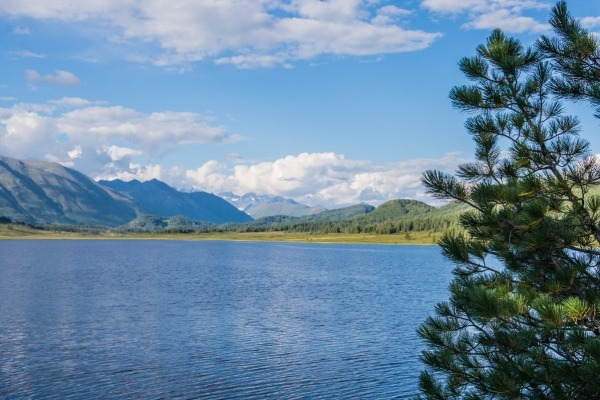

Gallery





Katon-Karagay National Park is the largest national park in Kazakhstan, covering over 643,000 hectares. It is part of the Altai Mountains, with untouched landscapes, clean air, and incredible biodiversity.
The area has ancient cultural sites, including burial mounds and petroglyphs. The park was officially established in 2001 to protect ecosystems and became a UNESCO Biosphere Reserve in 2014.
Located in East Kazakhstan near the borders of Russia, China, and Mongolia. The park includes mountains, glaciers, rivers, and forests. Mount Belukha is the highest peak nearby.
The park has waterfalls, valleys, alpine meadows, and crystal-clear rivers. The Kokkol Waterfall is one of the most stunning natural sites.
Rare animals include snow leopards, lynx, bears, wolves, foxes, and Altai mountain sheep. Over 300 bird species are also found here.
• Area: 643,000 hectares
• Founded: 2001
• UNESCO status: 2014
• Plant species: 1000+
• Animal species: 400+
• Bird species: 300+
1. Located in East Kazakhstan near Russia, China, and Mongolia; the intersection of countries creates rich biodiversity.
2. Established in 2001 to protect ecosystems, landscapes, and endangered species.
3. Important globally as part of UNESCO Biosphere Reserve, protecting biodiversity and ecological balance.
4. Includes mountains, glaciers, rivers, forests, waterfalls, and valleys.
5. Snow leopards, lynx, bears, wolves, foxes, Altai mountain sheep, and many bird species.
6. Over 1000 plant species, many rare and medicinal.
7. Hiking, horseback riding, fishing, camping, skiing, and photography.
8. Continental climate: cold winters, cool summers.
9. Mount Belukha, Kokkol Waterfall, Rakhmanov Springs.
10. No hunting, no pollution, respect nature, follow park rules.


